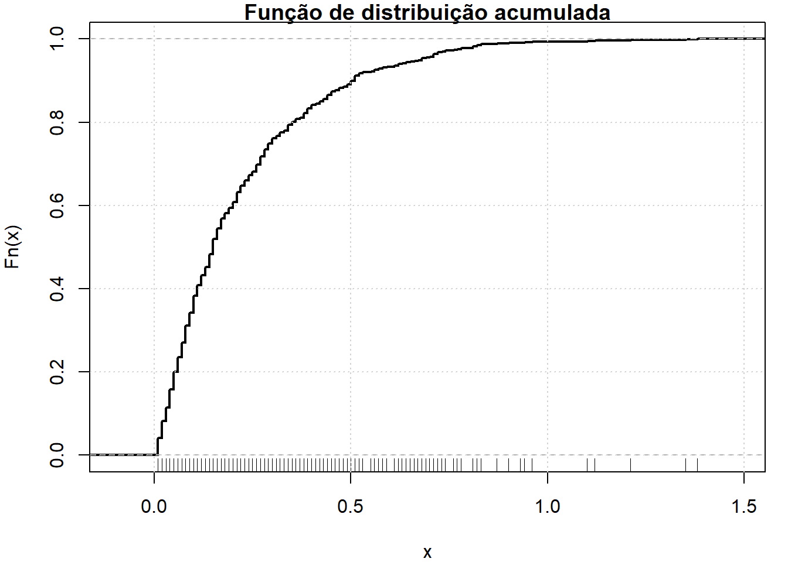
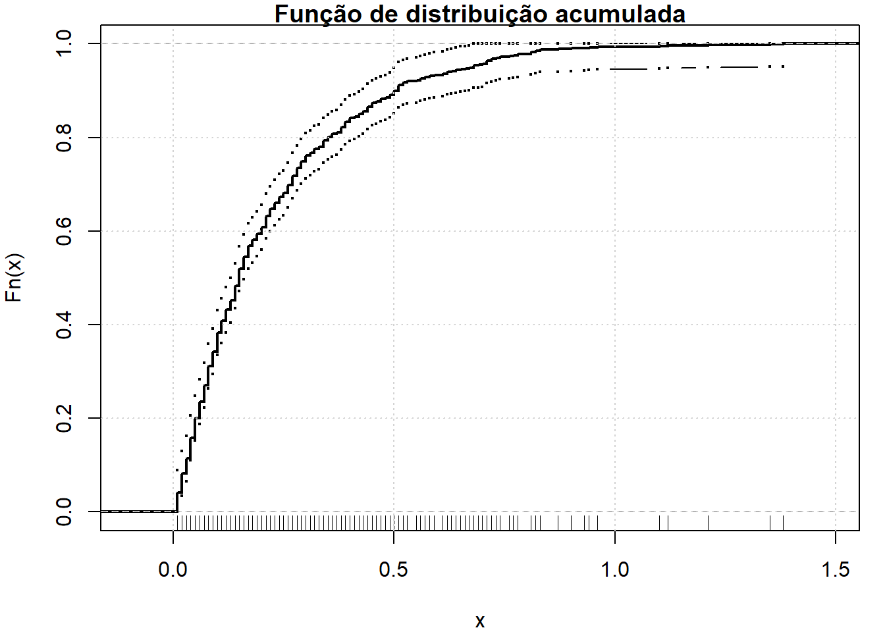

Code
nervo = read.csv("http://leg.ufpr.br/~lucambio/CE313/20241S/nerve.dat", header = FALSE)
head(nervo) V1
1 0.21
2 0.03
3 0.05
4 0.11
5 0.59
6 0.06Começamos com o problema de estimar uma função de distribuição acumulada. Seja
\[X_1,\cdots, X_n\sim F\] onde \(F(x) = P(X\leq x)\) é uma função de distribuição na reta real. Estimamos \(F\) com a função de distribuição empírica.
A função de distribuição empírica \(\widehat{F}_n\) é a função de distribuição que coloca peso \(1/n\) em cada ponto de dados \(X_i\). Formalmente,
\[ \widehat{F}_n(x) = \dfrac{1}{n}\sum_{i=1}^n \pmb{I}(X_i\leq x), \]
para \(x\in\mathbb{R}\), sendo que
\[ \pmb{I}(x)=\left\{ \begin{array}{lc} 1, & \mbox{se } X_i\leq x \\ 0, & \mbox{se } X_i > x\end{array}\right.\cdot \]
Exemplo 1: Dados do nervo.
Cox and Lewis (1966) relataram 799 tempos de espera entre pulsos sucessivos ao longo de uma fibra nervosa. A figura abaixo mostra os dados e a função de distribuição empírica \(\widehat{F}_n\).
nervo = read.csv("http://leg.ufpr.br/~lucambio/CE313/20241S/nerve.dat", header = FALSE)
head(nervo) V1
1 0.21
2 0.03
3 0.05
4 0.11
5 0.59
6 0.06n = length(nervo$V1)
n[1] 799O seguinte exemplo mostra como obtermos a função de distribuição acumulada estimada ou empírica no R.
Fn = ecdf(nervo$V1)
par(mar=c(4,4,1,1))
plot(Fn, verticals = TRUE, do.points = FALSE, lwd = 2,
main = "Função de distribuição acumulada")
rug(nervo$V1)
grid()
FIGURA 1: Dados de uma fibra nervosa. Cada linha vertical representa um ponto de dados. A linha sólida é a função de distribuição empírica.
O teorema a seguir fornece algumas propriedades de \(\widehat{F}_n\)
::: {.callout-note appearance=“simple”} ## Teorema 4.1
Seja \((_1,\cdots,X_n\) uma amostra aleatória da distribuição \(F\) e seja \(\widehat{F}_n\) a função de distribuição empírica. Então
Para qualquer valor fixo \(x\in\mathbb{R}\), \[ \mbox{E}\Big(\widehat{F}_n(x) \Big)=F(x) \qquad \mbox{e} \qquad \mbox{Var}\Big(\widehat{F}_n(x) \Big)=\dfrac{F(x)(1-F(x))}{n}\cdot \] Isto significa que \(\widehat{F}_n(x)\) é consistente para \(F(x)\).
Teorema de Glivenco-Cantelli \[ \sup_x |\widehat{F}_n(x)-F(x) | \to 0, \quad \mbox{quase certamente}\cdot \]
Teorema desigualdade de Dvoretzky-Kiefer-Wolfowitz
\[ P\left ( \sup_x |\widehat{F}_n(x)-F(x) |>\epsilon\right) \leq 2\mbox{e}^{-2n\epsilon^2}\quad \mbox{para algum } \epsilon>0\cdot \]
Demonstração.
A partir da desigualdade de Dvoretzky-Kiefer-Wolfowitz (DKW), podemos construir um conjunto de confiança. Seja \(\epsilon^2_n = \log(2/\alpha)/(2n)\), \(L(x) = \max\{\widehat{F}_n(x) - \epsilon_n,0\}\) e \(U(x) = \min\{\widehat{F}_n(x) + \epsilon_n, 1\}\). Segue do item 3, no teorema acima, que para qualquer \(F\),
\[ P\Big( L(x)\leq F(x)\leq U(x) \quad \forall x\in\mathbb{R}\Big) \geq 1-\alpha\cdot \]
Assim, \(\big(L(x), U(x)\big)\) é uma faixa de confiança não paramétrica com coeficiente de confiaça \(1-\alpha\). Existem faixas de confiança mais restritas, mas usamos a faixa DKW porque é simples. <br<
Exemplo 2: Intervalo de confiança.
Queremos obter uma banda de confiança para \(\widehat{F}_n\) com nível de confiança \(\alpha=0.05\). Para isto utilizaremos a desigualdade DKW, no Teorema 1.
Observemos que \[ \epsilon = \sqrt{\frac{1}{2n}\log\big( \frac{2}{0.05}\big)} = 0.048\cdot \]
Encontremos os limites do intervalo de confiança.
epsilon = sqrt(1/(2*n)*log(2/0.05))
epsilon[1] 0.04804618ls(environment(Fn))[1] "f" "method" "na.rm" "nobs" "x" "y" "yleft" "yright"y = get("y",environment(Fn))
x = get("x",environment(Fn))
L = ifelse(y-epsilon<0,0,y-epsilon)
U = ifelse(y+epsilon>1,1,y+epsilon)Mostrando o gráfico resultante, ou seja, a função de distribuição empírica e a banda de confiança.
par(mar=c(4,4,1,1))
plot(Fn, verticals = TRUE, do.points = FALSE, lwd = 2,
main = "Função de distribuição acumulada")
lines(knots(Fn),L,type="b",pch=19,cex=0.3)
lines(knots(Fn),U,type="b",pch=19,cex=0.3)
rug(nervo$V1)
grid()
FIGURA 2: Dados de uma fibra nervosa. Cada linha vertical representa um ponto de dados. A linha sólida é a função de distribuição empírica. As linhas acima e abaixo da linha média representam uma faixa de confiança de 95%.
Gere 100 observações a partir de uma distribuição \(N(0,1)\). Calcule uma faixa de confiança de 95% para a função de distribuição empírica \(\widehat{F}_n\). Repita isso 1000 vezes e veja com que frequência a faixa de confiança contém a verdadeira função de distribuição. Repita usando dados de uma distribuição Cauchy.
Seja \(X_1,\cdots, X_n\) uma amostra aleatória da distribuição \(F\) e seja \(\widehat{F}_n\) a função de distribuição empírica. Para um \(x\) fixo, encontre a distribuição limite de \(\sqrt{\widehat{F}_n(x)}\).
Sejam \(x\) e \(y\) dois pontos distintos. Encontre \(\mbox{Cov}\Big(\widehat{F}_n(x),\widehat{F}_n(y)\Big)\).